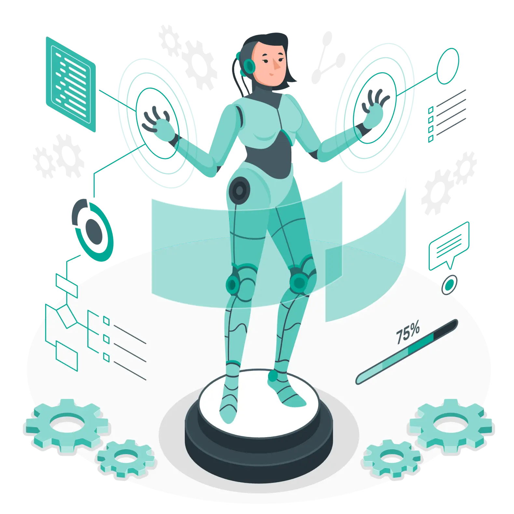

MSP Automation Guide
AI Automation for MSPs: Practical Uses, Risks and Controls
Explore safe AI automation for MSPs, including ticket classification, summaries and content assistance with deterministic rules and human review.

Quick answer
AI automation for MSPs uses models to assist with unstructured information such as ticket text, emails, documents and summaries. It is most reliable when AI proposes a classification or draft while deterministic rules, source evidence and human approval control consequential actions.
High-value AI use cases
AI can classify ticket intent, summarize long threads, extract fields from documents, draft knowledge suggestions and prepare client-ready explanations. It can also identify patterns for review, such as repeated sentiment or emerging service themes.
These tasks benefit from language understanding but do not require the model to hold final authority.
Where deterministic automation is better
Known thresholds, contract rules, invoice calculations, identity permissions and SLA clocks should be governed by explicit logic. A model should not guess whether a client is entitled to a service or whether an invoice should be approved.
Controls for AI workflows
Ground the model in approved sources, capture the evidence used, validate required fields and set confidence or completeness rules. Redact sensitive information where appropriate and define what happens when the model is unavailable. Human review should be a designed state, not an emergency workaround.
How to evaluate an AI pilot
Use representative synthetic cases, including ambiguous and adversarial inputs. Score accuracy by category, not only overall percentage. Measure how often reviewers correct the output and whether the AI actually reduces handling time after review.
Frequently asked questions about AI automation for MSPs
How can MSPs use AI automation?
Common uses include ticket classification, conversation summaries, structured-data extraction, knowledge assistance and draft communications.
Is AI safe for MSP operations?
It can be when access, data handling, grounding, validation and human approval are designed for the specific risk.
Should AI automatically close tickets?
Only in narrowly defined, well-tested cases with reliable evidence and an appropriate rollback or escalation path.